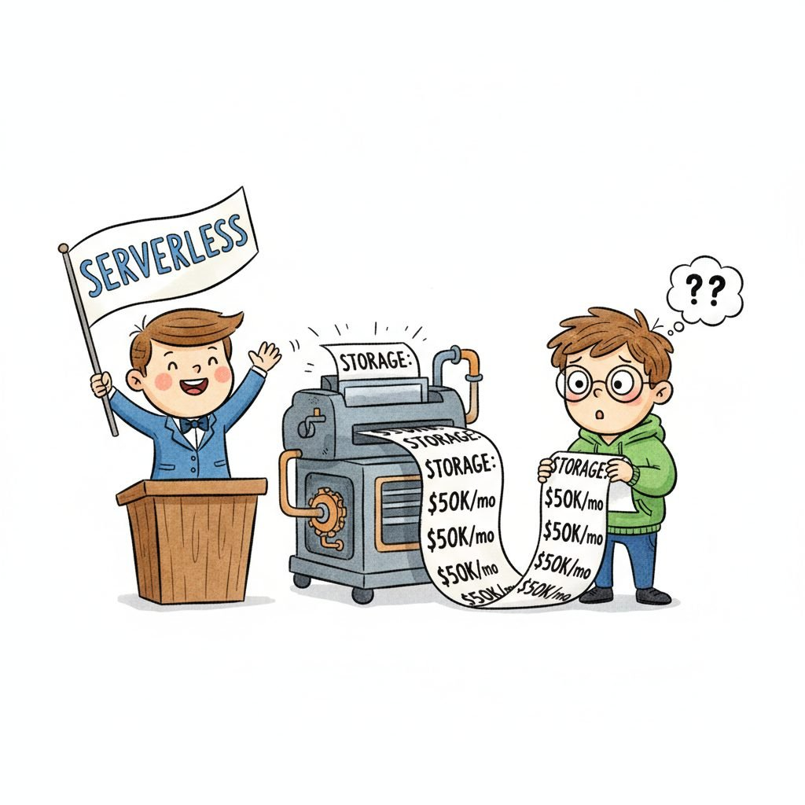

"Pick the wrong vector platform on Monday; spend the next six months explaining to leadership why the migration is on the roadmap. The index format is forever; the marketing copy is not."
Vec, Platform-Comparison-Spreadsheet AI Agent
A retrieval "platform" is the system of record for your vector index, your keyword index, and the metadata filters that join them. The 2026 landscape sorts into four buckets: serverless vector databases (Pinecone, Turbopuffer, Weaviate Cloud, Qdrant Cloud) that hide the index from you; managed search engines with vector add-ons (Elasticsearch, OpenSearch, Azure AI Search, Vespa Cloud, MongoDB Atlas Vector Search) that bolt kNN onto a mature lexical engine; self-hosted vector databases (Milvus, Qdrant OSS, Weaviate OSS, Chroma, LanceDB, Marqo, Vald) you run yourself for cost or data-residency reasons; and SQL-extensions like pgvector that put the vectors inside your existing Postgres so you do not run a second store at all. Pick along four axes: managed-vs-self-hosted, vector-only-vs-hybrid, single-tenant-vs-multi-tenant, and how much filter selectivity your queries demand.
Prerequisites
This section assumes the vector-search fundamentals from Section 32.1, the RAG architecture from Section 32.1, and the embedding-model vocabulary from Section 3.1.
The platform choice is the most consequential infrastructure decision in a retrieval-augmented system, because every downstream concern (ingest throughput, query latency at the 99th percentile, how filtering interacts with the ANN index, multi-tenant isolation, backup and disaster recovery, cost at 10x today's volume) inherits its idioms. A team on pgvector reuses Postgres operations; a team on Pinecone outsources the index entirely but lives inside one vendor's pricing model; a team on Milvus runs a distributed system whose etcd, MinIO, and Pulsar dependencies need their own oncall. None of these are wrong, but switching costs after six months are large.
Every "modern" retrieval platform sits on a 60-year algorithmic lineage that is easy to forget under the marketing layer. The probabilistic relevance framework that anchors BM25 was formalized by Robertson and Sparck-Jones (1976), giving the term-weight $\text{IDF}(t) = \log \frac{N - n_t + 0.5}{n_t + 0.5}$ and the saturation curve $\frac{f(t,d)(k_1+1)}{f(t,d)+k_1(1-b+b|d|/\text{avgdl})}$ that still ships inside Lucene. Latent Semantic Indexing (Deerwester et al. 1990) was the first to map documents into a low-rank continuous space via truncated SVD of the term-document matrix, $\mathbf{X} \approx U_k \Sigma_k V_k^\top$, prefiguring every dense embedding by 25 years. word2vec (Mikolov et al. 2013) replaced the SVD with a contrastive shallow network; BERT-base dense retrieval (Devlin 2018, Karpukhin et al. DPR 2020) replaced the shallow network with a transformer encoder; and the bi-encoder + ANN-index pipeline we ship in 2026 is the same architectural idea ("project queries and documents into a shared semantic space; score by inner product") that LSI introduced. The through-line tf-idf $\to$ BM25 $\to$ LSI $\to$ word2vec $\to$ BERT-dense is not a sequence of revolutions; it is one slowly-improving recipe for compressed semantic similarity.
36.1.1 Serverless and hosted vector databases
Serverless and hosted vector databases are the right default when you want to ship a retrieval system in weeks rather than months, when you do not have a dedicated infrastructure team, and when per-query cost is acceptable in exchange for zero operational surface area. You pay in vendor lock-in (each platform's index format is proprietary) and per-vector / per-query pricing.
- Pinecone (Pinecone Systems, 2019; serverless 2024) is the original managed vector database and the most-cited reference in RAG literature, distinguished by its 2024 serverless architecture that separates storage from compute and bills by ingest and query units rather than provisioned pods. Its objective is to make scaling from prototype to billions of vectors a pricing-model change rather than a re-architecture, which matters because pod-based scaling is the most common production migration pain in 2022-23 vector databases. The core technique is a separation of writes (durable object storage with batched indexing) from reads (autoscaled query nodes that lazily fetch index segments), enabled by Pinecone's proprietary geometric partitioning. Pick Pinecone Serverless when you want a vector index with truly elastic cost and the budget tolerates per-RU pricing; avoid when your workload is heavily filtered (Pinecone's pre-2024 filter performance was a known weakness, partially fixed but still secondary to engines like Vespa).
- Turbopuffer (Turbopuffer, 2024) is a newer serverless vector database that stores indexes on object storage (S3) and lazily materializes them at query time, with a pricing model targeted at workloads with cold-data majorities (the "long tail" of namespaces accessed rarely). Its objective is to make multi-tenant retrieval cheap at the per-tenant level (each tenant is its own namespace, billed only when queried), which matters for SaaS products with thousands of customer-scoped indexes. The core technique is object-store-native index segments plus a query-time JIT loader that pulls only the relevant segments. Pick Turbopuffer when you have many small, low-QPS namespaces (per-customer indexes in a B2B SaaS); avoid for steady high-QPS workloads where the cold-start tax dominates.
- Weaviate Cloud (Weaviate / SeMI, 2019) is the managed service for the open-source Weaviate engine, distinguished by first-class support for hybrid search (BM25 + vector with a configurable alpha weight) and a GraphQL query interface. Its objective is to be the platform where lexical and dense retrieval are equal citizens rather than a vector store with BM25 bolted on, which matters when your corpus has rare terms (product SKUs, drug names, legal citations) where pure dense retrieval underperforms. The core technique is per-collection inverted and HNSW indexes that the query planner combines via reciprocal rank fusion or a weighted score. Pick Weaviate Cloud when hybrid search is a primary requirement and you want a managed service; for self-hosted hybrid, Weaviate OSS or Vespa are the alternatives.
- Qdrant Cloud (Qdrant, 2021) is the managed service for the Rust-based Qdrant engine, distinguished by quantization options (scalar, product, binary) that let you trade recall for memory, and strong filtered-search performance via Qdrant's "filterable HNSW" index. Its objective is to give teams who hit pre-filtering bottlenecks in other engines a managed path forward, which matters because filter-then-ANN (small candidate set) and ANN-then-filter (low recall) both fail at scale; Qdrant's filterable HNSW threads the needle. The core technique is to embed filter information directly into the HNSW graph traversal so heavy filtering does not collapse recall. Pick Qdrant Cloud when your queries have high filter selectivity (each query filters down to less than 5% of vectors); for unfiltered nearest-neighbor workloads, the differentiation is smaller.
- MongoDB Atlas Vector Search (MongoDB, 2023) is the vector-search service inside MongoDB Atlas, distinguished by living inside the same database as your operational documents rather than as a separate store. Its objective is to eliminate the dual-write problem (keep Mongo records and a separate vector index in sync) by putting the vectors next to the source-of-truth document, which matters when document metadata changes constantly and a sync lag would visibly degrade results. The core technique is a separate Lucene-based vector index that ties to documents by _id, transactionally consistent with the document writes. Pick Atlas Vector Search when MongoDB is already your operational store and you want one fewer database; avoid for workloads exceeding the scale where Atlas's tier ladder gets expensive (billions of vectors).
- Azure AI Search (Microsoft, 2014 as Azure Search; vector 2023) is Microsoft's managed search platform with vector and hybrid retrieval, distinguished by mature enterprise integration (Azure AD, private endpoints, customer-managed keys, RBAC at the index level) rather than raw vector performance. Its objective is to be the search-and-retrieval backbone inside the Azure compliance perimeter, which matters in regulated industries already standardized on Azure. The core technique is a single index that holds BM25 inverted lists, HNSW vector indexes, and semantic-reranker fields side by side, queryable in a single hybrid call. Pick Azure AI Search when you are on Azure and enterprise compliance dominates; for raw vector performance per dollar, the focused vector databases win.
- Elasticsearch with kNN and OpenSearch with kNN (Elastic / AWS, 2010+; vector 2022-23) are the lexical-engine incumbents that added approximate-kNN as a first-class field type, distinguished by the maturity of every adjacent capability (aggregations, geo queries, percolators, full-text scoring, alerting). Their objective is to keep teams who already run Elasticsearch on Elasticsearch instead of adding a second store, which matters because the operational cost of running two heterogeneous search systems is the recurring complaint of mid-stage retrieval projects. The core technique is HNSW indexes inside Lucene segments, executed in the same shard as BM25 so hybrid queries are a single shard request. Pick Elasticsearch or OpenSearch when keyword search is already a primary workload and vectors are a new addition; avoid for vector-only workloads where the engine's lexical machinery is overhead.
- Vespa Cloud (Yahoo / Vespa.ai, 2017 open-source; Cloud 2020) is the managed service for Vespa, the engine descended from Yahoo's web search infrastructure, distinguished by first-class structured tensors and a Ranking Expression language that lets you write multi-phase ranking (cheap candidate retrieval, expensive ML reranker) inside the engine. Its objective is to be the platform where complex multi-stage ranking lives in one query, not in a sequence of separate services, which matters at scales where every network hop is a latency tax. The core technique is in-engine tensor computation and a query planner that fuses retrieval and ranking phases. Pick Vespa Cloud when ranking is genuinely multi-stage (retrieval, lightweight rerank, expensive cross-encoder) and you want it all in one call; avoid for simple kNN where the configuration surface is overkill.
Every "serverless" vector database in 2026 has a storage-tier cost that bills continuously, even when nobody is querying. Pinecone Serverless charges per stored vector per month; Turbopuffer charges per GB of object storage; Weaviate Cloud charges per provisioned compute regardless of traffic. The "serverless" promise is autoscaled compute, not free idle. A B2B product with 500 customer indexes and 480 of them inactive most of the month will see storage cost dominate. Model your billing as "storage + writes + queries" with realistic per-tenant activity distributions before assuming serverless is cheaper.
Figure 36.1.2 dramatizes exactly this gap between the pitch and the bill:

36.1.2 Self-hosted vector databases
Self-hosted vector databases are the right default when data residency rules out a cloud vendor, when per-query economics at high scale make a managed service unaffordable, or when the team has the operational maturity to run another stateful system. You pay in operational complexity and a longer time-to-first-bot, but you keep full control of the index format, the upgrade cadence, and the cost model.
- Milvus (Zilliz, 2019; Milvus 2.x 2022+) is the heavyweight distributed vector database, designed from day one for billion-scale workloads with separated compute and storage tiers backed by etcd, object storage (MinIO or S3), and a message queue (Pulsar or Kafka). Its objective is to be the open-source platform that can grow to internet-scale without re-architecture, which matters for teams that expect billions of vectors and millions of QPS. The core technique is a coordinator-and-worker architecture where ingest, indexing, and query nodes scale independently. Pick Milvus when you genuinely need distributed scale and have the operations team for a multi-component stateful system; for small or medium workloads, the operational complexity is wasted. The managed alternative Zilliz Cloud is the same engine without the etcd/MinIO/Pulsar oncall.
- Qdrant OSS (Qdrant, 2021) is the self-hosted release of Qdrant, written in Rust and distinguished by being a single binary with embedded storage (no etcd, no MinIO, no separate metadata service). Its objective is to be the easiest production-grade vector database to deploy: one container, one volume, one port. The core technique is per-collection HNSW indexes plus the filterable-HNSW algorithm covered in the managed section. Pick Qdrant OSS when you want a self-hosted vector database that fits the "one container plus a disk" operational profile; for distributed scale beyond a single node, Milvus or Vespa are stronger.
- Weaviate OSS (SeMI / Weaviate, 2019) is the self-hosted release of Weaviate, distinguished (like the cloud version) by first-class hybrid search and a strong module ecosystem (named-entity recognition, custom rerankers, vectorizer modules that call external embedding APIs). Its objective is to be the open hybrid-search platform you can run anywhere, which matters when you want OSS Weaviate's hybrid story without depending on a cloud account. The core technique is HNSW plus BM25 inverted indexes per collection, with a query planner that combines them via configurable fusion. Pick Weaviate OSS when hybrid search is a primary requirement and you want self-hosting; avoid when pure-vector workloads make the hybrid machinery unused complexity.
- Chroma / ChromaDB (Chroma, 2022) is the developer-experience-first embedded vector database, distinguished by an API designed for notebook-friendly prototyping (one Python import, one collection, one query) and a hosted Chroma Cloud for production. Its objective is to be the fastest path from "I have some text and an embedding model" to "I have a working retrieval system", which matters because the friction of standing up a vector database is a real barrier to prototyping. The core technique is an embedded SQLite-backed store with HNSW indexes that can scale up to a hosted distributed runtime. Pick Chroma when you are prototyping or running a small production retrieval system where simplicity dominates; for billion-scale or tight-SLA production, the heavier platforms win.
- pgvector (Andrew Kane, 2021; HNSW in 0.5+) is the Postgres extension that adds a vector column type plus exact and approximate (IVFFlat, HNSW) indexes on it. Its objective is to eliminate the separate-store problem by putting vectors in the same database as your application tables, which matters when transactional consistency between vectors and their source rows is required, when your team is already an expert at running Postgres, and when adding a second stateful system would dominate the platform cost. The core technique is a Postgres extension exposing HNSW and IVFFlat as normal index methods, with vectors stored as a new column type. Pick pgvector when you already run Postgres, when your vector count is in the tens of millions or below (a 2026 commodity Postgres can handle 50M+ vectors with HNSW), and when joining vectors to relational tables is more important than raw vector throughput; avoid for billion-scale or for workloads where ANN performance is the primary metric.
- LanceDB (LanceDB Inc., 2022) is an embeddable columnar vector database built on the Lance file format, distinguished by zero-copy reads from object storage and an emphasis on multimodal data (vectors, images, audio in one row). Its objective is to be the embedded vector database that scales to data-lake sizes by reading from S3 directly without a separate server, which matters for ML pipelines that already live in a lakehouse. The core technique is the Lance columnar file format plus an embedded query engine; LanceDB Cloud and OSS share the same format. Pick LanceDB when your vectors live alongside large binary assets in object storage and a separate index server would add latency; avoid for high-QPS online serving where a memory-resident engine is faster.
- Marqo (Marqo AI, 2022) is an open-source vector engine that bundles an embedding pipeline (you index raw text and Marqo embeds it inside the engine), distinguished by built-in multimodal support and a focus on out-of-the-box developer ergonomics. Its objective is to eliminate the separate embedding-service tier, which matters for teams who do not want to operate an inference service alongside the vector index. Pick Marqo when bundling embedding and retrieval is a real value (small teams, simple stacks); for separation of concerns or BYO embedding model, other engines are cleaner.
- Vald (Yahoo Japan, 2019) is a Kubernetes-native distributed vector search engine built on NGT (Yahoo Japan's HNSW-like graph), distinguished by sharding-and-replication primitives that target very large scale on K8s. Its objective is to be the K8s-native open vector platform for hyperscale, which matters in environments where K8s is the standardized substrate. Pick Vald when K8s-native vector serving is a hard requirement and Milvus's complexity is unwelcome; for non-K8s deployments, the value evaporates.
- FAISS (Meta, 2017) is the canonical CPU/GPU library for nearest-neighbor search, not a database. It exposes IVF, HNSW, PQ, IVF-PQ, and many other index types as Python and C++ libraries you embed in your application or wrap in your own service. Its objective is to be the lowest-level retrieval kernel that all higher-level vector databases benchmark against, which matters when you want maximum control over the index format and you are willing to build your own persistence, replication, and query plane. Pick FAISS when you are building a custom retrieval service and need the most flexible algorithm catalog; for production-ready persistence and scaling, use a database that wraps FAISS-class primitives (Milvus, Qdrant, Weaviate).
Of the self-hosted options above, qdrant-client is the easiest path from "pip install" to a running production index. The Python client speaks both REST and gRPC, supports async, and exposes Qdrant's filterable-HNSW, hybrid (sparse + dense), and named-vector primitives uniformly. Pair it with the qdrant/qdrant Docker image (one binary, one volume) and you have a single-node deployment in five minutes.
Show code
pip install qdrant-client
from qdrant_client import QdrantClient
from qdrant_client.models import Distance, VectorParams, PointStruct
client = QdrantClient(url="http://localhost:6333")
client.create_collection(
collection_name="docs",
vectors_config=VectorParams(size=1024, distance=Distance.COSINE),
)
client.upsert(collection_name="docs", points=[
PointStruct(id=1, vector=[0.1]*1024, payload={"lang": "en"}),
])
hits = client.query_points(collection_name="docs", query=[0.1]*1024, limit=5)QdrantClient.create_payload_index("docs", "lang", "keyword") to enable filter-aware HNSW for tenant-style queries.36.1.3 Hybrid search and metadata filtering
"Hybrid" in 2026 means three different things depending on who is talking. Pin the speaker to one of these:
- Lexical + dense fusion: BM25 over an inverted index plus dense kNN over an HNSW index, combined via reciprocal rank fusion or a weighted sum. Weaviate, Vespa, Elasticsearch, OpenSearch, Azure AI Search, and Milvus 2.4+ support this natively; in everything else, you run two queries and fuse client-side.
- Sparse + dense fusion: SPLADE or other learned sparse vectors plus dense vectors. Pinecone, Vespa, and Qdrant support sparse vectors as a first-class field type. The sparse-and-dense story is increasingly the default for high-recall retrieval, especially with the BGE-M3 family that emits both in one forward pass (covered in Section 36.4).
- Metadata-filtered vector search: a vector kNN with a structured predicate (date range, tenant ID, language, document type). Every vector database supports this; the question is how the engine threads the filter through the ANN index. Three patterns: pre-filter (build a candidate set then ANN inside it, fast for very selective filters but slow when most vectors match), post-filter (run ANN then drop non-matching results, fast but loses recall when filters are selective), and filter-aware ANN (Qdrant's filterable HNSW, Milvus's bitset masking, Vespa's filter-aware ranking) which threads the predicate through traversal.
Hybrid filter performance is the biggest production differentiator at scale. A query that filters down to 1% of vectors and then asks for top-10 nearest neighbors stresses every engine differently. Benchmark on your actual filter selectivity, not on unfiltered queries.
The 2024 ANN-Benchmarks "filtered-recall" addendum measured the same query (top-10 vector kNN, filter selectivity 1 percent) on a 10M-vector deep-image collection across four engines. Qdrant's filterable HNSW returned recall 0.94 at 8ms p95. Pinecone's post-filter strategy returned recall 0.31 at 5ms p95 because the ANN walked the index without knowing about the filter and most of the top-100 candidates were filtered out. Same query, same data, same recall target, 3x recall gap, all from how the engine threads the predicate. The lesson: at 50 percent selectivity all engines look identical, but at 1 percent selectivity (the regime that matters for tenant-scoped or date-scoped production search) the index architecture diverges by a factor of 3. This is why "we benchmarked on unfiltered queries" is the most common silent failure in vector-DB procurement.
Hybrid search in Weaviate is a single GraphQL or Python call with an alpha that controls the BM25-vs-dense weight:
import weaviate
from weaviate.classes.query import Filter, HybridFusion
client = weaviate.connect_to_wcs(cluster_url="...", auth_credentials=...)
docs = client.collections.get("Docs")
results = docs.query.hybrid(
query="federal reserve interest rate decision",
alpha=0.7, # 0.0 = pure BM25, 1.0 = pure vector
fusion_type=HybridFusion.RANKED, # or RELATIVE_SCORE
filters=Filter.by_property("language").equal("en") &
Filter.by_property("published_at").greater_than("2025-01-01"),
limit=10,
)
for o in results.objects:
print(o.properties["title"], o.metadata.score)The alpha is the most-tuned parameter in production hybrid search. 0.7 is a common starting point; tune on a held-out test set rather than by intuition.
36.1.4 Selection criteria: the axes that matter
The platform choice mostly reduces to seven axes. Score each candidate honestly against your workload before reading reviews:
- Index type: HNSW is the default in 2026 for online serving (low latency, high recall, high memory). IVF and IVF-PQ trade recall for memory and are the right pick for offline batch retrieval or hundreds of millions of vectors on a budget. Product quantization (PQ) cuts memory by 4-32x with a corresponding recall drop; scalar quantization is the lightest-touch alternative. Binary quantization (1 bit per dimension) is the most aggressive and works surprisingly well with reranking. The index type a platform supports is more important than its marketing claims.
- Filter performance: as covered above, the difference between pre-filter, post-filter, and filter-aware ANN dominates at high filter selectivity. Benchmark on your actual filter distribution, not on the vendor's marketing demo.
- Scale: number of vectors (millions, hundreds of millions, billions), ingest rate (vectors per second), and query QPS. Pinecone Serverless and Turbopuffer scale by adding compute; Milvus and Vespa scale by adding nodes; pgvector and Chroma scale vertically (single node, larger machine). Match the scaling model to your growth curve.
- Multi-tenancy: many SaaS retrieval workloads have one index per customer with thousands of customers. Per-tenant namespaces (Pinecone, Turbopuffer, Qdrant), per-collection databases (Weaviate, Milvus), or per-row tenant_id filters (pgvector, Chroma) are the three patterns. The first scales tenants cheaply but limits cross-tenant queries; the third scales tenants infinitely but pays for tenant filtering on every query.
- Operations: how many components (one binary or five), how do upgrades work, what does backup look like, how do you handle index rebuilds, how do you observe latency. The recurring complaint about Milvus is the operational surface; the recurring praise for Qdrant OSS is "it is one container".
- Cost: storage, query, and indexing cost models differ. Build a 10x-volume cost model before committing. Pinecone Serverless's pricing is favorable at light load and steep at heavy load; pgvector is essentially free at low scale but requires a beefy Postgres at high scale; Milvus's compute cost is the same as the rest of your infrastructure.
- Lock-in: every platform's index format is proprietary, so migration cost is real. The portable artifacts are the vectors and the metadata, both of which you should retain in object storage as a re-indexing escape hatch. The right way to mitigate lock-in is the standard library of embeddings, not the platform itself.
Public numbers from the ANN-Benchmarks suite (Aumuller et al. 2017; live at ann-benchmarks.com) on the Glove-100 dataset (1.18M 100-dim vectors, angular distance, k=10) anchor the three-way trade-off between the dominant ANN families. Numbers vary $\pm 20\%$ across hardware generations but the shape is stable.
| Index (typical config) | Recall@10 | QPS (single core) | Memory |
|---|---|---|---|
| HNSW (M=16, efConstruction=200, efSearch=64) | ~0.95 | ~5,000 | 1.0x (baseline ~470 MB) |
| IVF-Flat (nlist=4096, nprobe=8) | ~0.85 | ~12,000 | ~1.0x (~470 MB) |
| IVF-PQ (nlist=4096, m=16 subquantizers) | ~0.80 | ~30,000 | ~0.12x (~60 MB, 8x savings) |
The Pareto frontier reads cleanly: HNSW buys the top recall at moderate throughput and full memory; IVF-Flat halves recall-loss in exchange for $2.4\times$ throughput; IVF-PQ trades another 5 recall points for $6\times$ throughput and an $8\times$ memory cut. The IVF-PQ slot is the canonical billion-scale recipe because RAM cost dominates at that scale and a reranker recovers 3-5 of the lost recall points. For sub-50M-vector workloads where memory is cheap, HNSW is almost always the right default.
The asymptotic bounds for the three index families, with $N$ = corpus size, $D$ = vector dimension, $M$ = HNSW out-degree, $n_{\text{list}}$ = IVF cell count, $D'$ = PQ code length in bytes, $k$ = top-k:
HNSW (Malkov & Yashunin 2018). Insertion cost $O(M \log N)$ per vector; query cost $O(\log N)$ greedy descent with constant factor proportional to $M \cdot D$ for distance computations. Memory $O(N \cdot D + N \cdot M)$, dominated by the vector payload plus the graph edges.
IVF-Flat (Jegou et al. 2011). Build cost $O(N \cdot D \cdot n_{\text{iter}})$ for k-means on $n_{\text{list}}$ centroids. Query cost $O\!\left(n_{\text{list}} \cdot D + \frac{n_{\text{probe}} \cdot N}{n_{\text{list}}} \cdot D\right)$: first locate the $n_{\text{probe}}$ closest cells, then scan all vectors inside them. The expected per-query work is approximately $O(N/n_{\text{list}} \cdot D)$ when $n_{\text{probe}}$ is fixed.
IVF-PQ (Johnson et al. 2019, FAISS). Same coarse step plus a PQ-coded fine step: $O(n_{\text{list}} \cdot D + \frac{n_{\text{probe}} \cdot N}{n_{\text{list}}} \cdot D' + k \cdot D)$. The $D'$ factor (typically 16-64 bytes per vector) replaces a $D \cdot 4$-byte float scan; the final $k \cdot D$ is the optional exact rerank of the top-$k$ candidates against the raw vectors. The compression ratio is $\frac{4D}{D'}$; recall is recovered via $n_{\text{probe}}$ or by reranking against full-precision vectors.
36.1.5 A decision tree
The fastest way to narrow the platform shortlist is to answer one or two of the questions below; the first question that matches your situation typically picks the platform within a small set. The tree is rough by design: the right second-pass evaluation is a small load-test on representative data, since real workloads diverge from synthetic benchmarks by 2-5x in either direction.
- Already on Postgres? Vectors fit on a single beefy node? Use pgvector. The operational simplicity wins below ~50M vectors. pgvector 0.7.0 (2024) added HNSW with parallel index builds and reaches roughly 95% recall@10 at sub-10ms p99 latency on a single 32-core node up to 10M vectors of 1536 dimensions.
- Need to ship in two weeks with no infra team? Use Pinecone, Chroma Cloud, or Weaviate Cloud. Pinecone is the safest default; Chroma is the fastest to first query; Weaviate wins if hybrid search is a hard requirement. Pinecone Serverless's pay-per-read pricing (introduced January 2024 at roughly $0.33 per million queries plus $0.33 per GB-month of storage) is the lowest-friction starting point.
- Multi-tenant SaaS with many small per-customer indexes? Use Turbopuffer or Pinecone Serverless with namespaces. Both bill cold tenants cheaply. Turbopuffer's S3-backed architecture (launched 2024) means a tenant with 10k vectors that gets zero queries this month costs you the S3 storage fee only, roughly $0.0001 per tenant; the same tenant on a provisioned cluster would carry node-share fixed cost.
- Heavy filtering (query selectivity below 5%)? Use Qdrant (Cloud or OSS) for filterable HNSW, or Vespa for in-engine filter-aware ranking. The 2023 ANN benchmarks showed that naive HNSW with post-filtering degrades recall sharply when fewer than 1% of vectors pass the filter; Qdrant's payload-aware graph search holds recall above 90% in that regime.
- Already running Elasticsearch / OpenSearch? Use the native vector field. Two engines cost two oncall rotations. Elasticsearch 8.0 (2022) shipped HNSW via the Lucene kNN integration; 8.15 (2024) added quantized HNSW that cuts memory by 4-8x with under 5% recall loss.
- Hybrid BM25-plus-vector is the core requirement? Use Weaviate, Vespa, Elasticsearch, OpenSearch, or Azure AI Search. The vector-only databases have weaker BM25 stories. Microsoft's 2024 study on hybrid retrieval reported that RRF (Reciprocal Rank Fusion) of BM25 and dense embeddings beats either alone by 8-15 points NDCG@10 on the BEIR suite; Azure AI Search ships RRF as a default.
- On-prem with strict data residency? Use Milvus, Qdrant OSS, Weaviate OSS, or pgvector. Pick by operational comfort: pgvector and Qdrant OSS are the simplest, Milvus the most scalable. Milvus 2.4 (2024) is the production choice at the scale of 10B-plus vectors; it ships with native Kubernetes operators and has been deployed at Walmart, eBay, and NVIDIA at billion-vector scale.
- Billion-vector scale with sustained high QPS? Use Milvus, Vespa, or Vald. The serverless options become expensive at this scale. Yahoo's Vespa runs the Yahoo News and Mail search backends at trillions of documents and tens of thousands of QPS; the open-source release in 2017 made the same code available outside Yahoo.
- Data already in a lakehouse (Iceberg, Delta, S3 Parquet)? Use LanceDB for embedded querying without a separate server. LanceDB's Lance file format (a columnar Parquet alternative with native vector support) lets you keep training and serving data in one store; the typical use case is multimodal model training where vectors and images coexist in the same table.
36.1.6 Comparing the platforms
| Platform | Best for | Index types | Hybrid | Deployment |
|---|---|---|---|---|
| Pinecone Serverless | Managed default, elastic cost | Proprietary (HNSW-class) | Sparse + dense | SaaS only |
| Turbopuffer | Many cold tenants, S3-native | Proprietary on object store | BM25 + dense | SaaS only |
| Weaviate (Cloud / OSS) | Hybrid BM25+dense default | HNSW + inverted | First-class | SaaS or self-hosted |
| Qdrant (Cloud / OSS) | Heavy filtering, simple ops | HNSW with filter graph | Sparse + dense | SaaS or self-hosted |
| Milvus / Zilliz | Billion-scale distributed | HNSW, IVF, IVF-PQ, DiskANN | Sparse + dense | SaaS or self-hosted |
| Vespa Cloud / OSS | Multi-phase ranking at scale | HNSW + tensor + BM25 | First-class | SaaS or self-hosted |
| Elasticsearch / OpenSearch | Already-running keyword search | HNSW (Lucene) | First-class | SaaS or self-hosted |
| MongoDB Atlas Vector Search | Same store as documents | HNSW (Lucene) | BM25 + dense | SaaS only |
| Azure AI Search | Azure compliance perimeter | HNSW + BM25 + semantic | First-class | SaaS only |
| pgvector | One database, joins to tables | HNSW + IVFFlat | Via tsvector | Self-hosted Postgres |
| Chroma | Prototyping, simplest API | HNSW | Limited | Embedded or SaaS |
| LanceDB | Lakehouse-native vectors | IVF-PQ + HNSW on Lance | BM25 + dense | Embedded or SaaS |
Vendor benchmarks always look great. The 99th-percentile latency on a vendor's reference dataset (often Glove, MS MARCO, or a synthetic 1M-vector set) tells you almost nothing about how the engine behaves on your data, with your filter distribution, your vector dimensionality, and your insert / query mix. Allocate a week of evaluation time to load 1-5% of your real corpus into the top two or three candidates and measure recall and latency on a held-out query set with your real filter predicates. Every retrospective complaint about a vector database in 2026 ("we picked X, and it does not scale to our load") traces back to a vendor benchmark that did not match the real workload.
Figure 36.1.3 captures the moment that gap becomes a production incident:
36.1.7 Platform pricing shapes
Vector platform pricing clusters into four shapes; each has a different break-point at scale:
Take one workload: a 100M-vector index of 768-dim float32 embeddings, ingest of 1M new vectors per day, query rate 200 QPS at p95 latency under 50ms. Plug it into 2024-Q4 published pricing for the four shapes. Pinecone Serverless (per-vector + per-query): about $2,800/month at $0.33 per million writes and $8 per million reads. Pinecone provisioned pods (s1.x2): about $1,440/month for two pods that hold the index with headroom. Azure AI Search Standard S1 (per-search-unit): about $1,000/month for a single tier that just fits the workload. Self-hosted Qdrant on a single c6a.4xlarge EC2: about $530/month in pure infrastructure, plus an estimated $4,000/month in engineer oncall time (the recurring lesson). Same workload, four shapes, a 7.5x raw-cost spread that flips entirely if you include engineering time. The pricing-shape decision is rarely about the sticker price; it is about which slope you can budget for as your vector count grows 10x in year two.
- Per-vector-stored plus per-query (Pinecone Serverless, Turbopuffer, Weaviate Cloud Serverless): the most predictable at small scale, the steepest at billion-vector scale. Model storage and query cost separately, because the ratio inverts as the index grows.
- Provisioned compute (Pinecone Pods, Weaviate Cloud Standard, Qdrant Cloud, Milvus Cloud, Zilliz Cloud): predictable monthly bill, you pay for headroom whether you use it or not. Right pick when QPS is steady.
- Per-search-unit (Azure AI Search, MongoDB Atlas Vector Search): a packaged unit of throughput and storage; growth is a tier change rather than a continuous spend. Predictable but coarse-grained.
- Infrastructure-only (self-hosted everything): only the cloud VM, storage, and bandwidth bill; the platform itself is free. Cheapest at large scale, most expensive in engineering time. The recurring lesson is to model the engineering oncall cost as a real number, not zero.
The single most common pricing mistake is to launch on a per-vector-plus-query plan, grow 10x in a year, and discover that the storage bill alone is now the size of three engineering salaries. Build the 10x model into the procurement decision.
36.1.8 Quantization and disk-resident indexes
Memory is the dominant cost at billion-vector scale. The 2026 platform-level techniques for staying within budget:
- Scalar quantization (SQ): each float32 dimension stored as int8 or int4, cutting memory by 4-8x. Most engines support this transparently; the recall hit is 1-3 NDCG points and almost always recovered by a reranker.
- Product quantization (PQ): each vector partitioned into subvectors, each subvector replaced by an index into a learned codebook. Cuts memory by 16-64x; recall hit is larger (5-10 points) but again recoverable with reranking. The IVF-PQ pattern (inverted file plus product quantization) is the canonical billion-scale recipe.
- Binary quantization (BQ): each dimension stored as a single bit (1 if positive, 0 otherwise). Memory cut by 32x; surprisingly competitive with full-precision when the embedder was trained matryoshka-style. Pinecone, Qdrant, and Weaviate all support BQ as of 2024-25.
- DiskANN: Microsoft's billion-scale graph index that lives on SSD rather than RAM. Milvus 2.4+ supports it as a storage backend; the right pick when working-set size exceeds RAM but a hot subset fits the SSD cache.
- Two-tier indexes: a quantized first-stage retrieval over the full corpus plus a full-precision rerank over the top-K candidates. The 2024-25 default for cost-optimized billion-scale deployments; the BGE-M3 plus BGE-Reranker pipeline is the canonical open-source instantiation.
The cost savings from quantization compound quickly: a billion-vector index of 1024-dim float32 vectors needs ~4 TB of RAM at full precision; binary-quantized it needs ~128 GB, which fits on a single machine. The recall recovery via reranking is essentially free once the index is small enough to fit.
36.1.9 Operations: backup, replication, disaster recovery
The 2026 operational questions that should appear in every platform evaluation:
- Backup strategy: how do you take a consistent snapshot? Pinecone and Turbopuffer back up automatically; Qdrant and Weaviate ship snapshot APIs; pgvector inherits Postgres's pg_dump or WAL-based backup. Test the restore path before you need it.
- Replication: read replicas for query scaling, write replicas for fault tolerance. Milvus, Vespa, and the cloud SaaS platforms ship this; Chroma and pgvector require external tooling (Postgres logical replication for pgvector).
- Index rebuilds: rebuilding an HNSW index from scratch is expensive (hours for tens of millions of vectors). Plan for "embedder upgrade" as a multi-day operation, not a hot deploy.
- Multi-region: latency-sensitive global workloads need replicas in multiple regions. Pinecone's regional deployments, Vespa's content-cluster topology, and Weaviate Cloud's multi-region replication are the canonical solutions; pgvector inherits Postgres multi-region replication patterns.
- Observability: query latency p50/p95/p99, recall versus a held-out gold set, ingest throughput, index-build progress, and storage growth are the standard dashboards. Most platforms ship Prometheus and CloudWatch integrations; the self-hosted stacks expect you to wire it up.
The recurring lesson of 2024-25 retrieval-platform retrospectives: teams budget for the index but underbudget for the operational machinery around it (backups, replication, monitoring, capacity planning, the on-call rotation, the periodic re-encode when an embedder upgrades). A vector index is a stateful database; treat it with the same operational seriousness as your primary OLTP store. If you cannot articulate your RTO and RPO for the index, the platform choice is premature.
What's Next?
In the next section, Section 36.2: Libraries and Frameworks, we build on the material covered here.